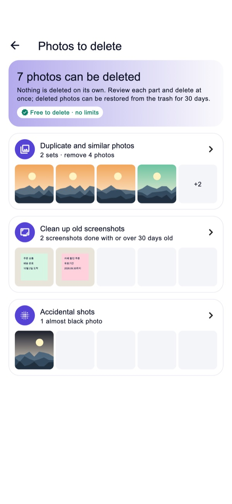

Deleting duplicate photos
1. What gets gathered
"Photos to delete" on the Photos tab gathers three kinds of photos.
• Duplicate and similar photos: the same photo twice, or shots taken in a row
• Old screenshots: captures older than 30 days. Captures showing receipts, bank details or passwords are not picked for you.
• Accidental shots: almost black photos taken by mistake

2. How to delete them
1. In each set the best photo is kept and the rest are picked for you.
2. Tap a photo to see it large and change which one is kept.
3. When you are happy, tap "Delete … photos".
3. Deleted by mistake?
Deleted photos can be restored from your phone's "Recently Deleted" for 30 days. On phones where that is not possible, the app tells you before deleting.